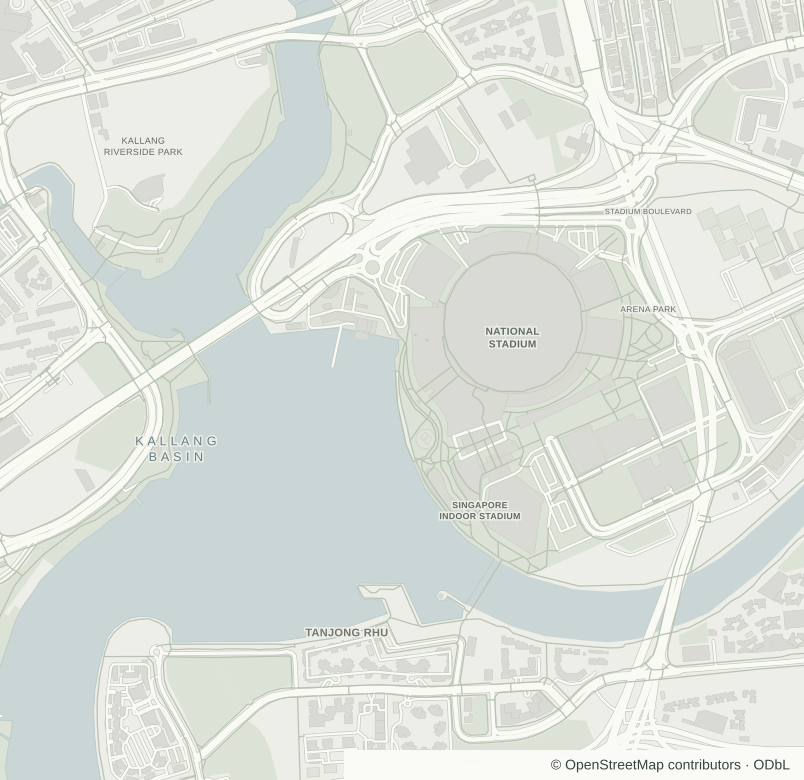

Run receipt
INTERVAL
SINGAPOREOUTDOOR RUNOCT 17, 2026
RUN
RUN
RUN

Sample playback only. No location is being collected.
KALLANG RIVERSIDE · SAMPLE RUN
Your numbers and route stay the same on the receipt. Nothing is uploaded.